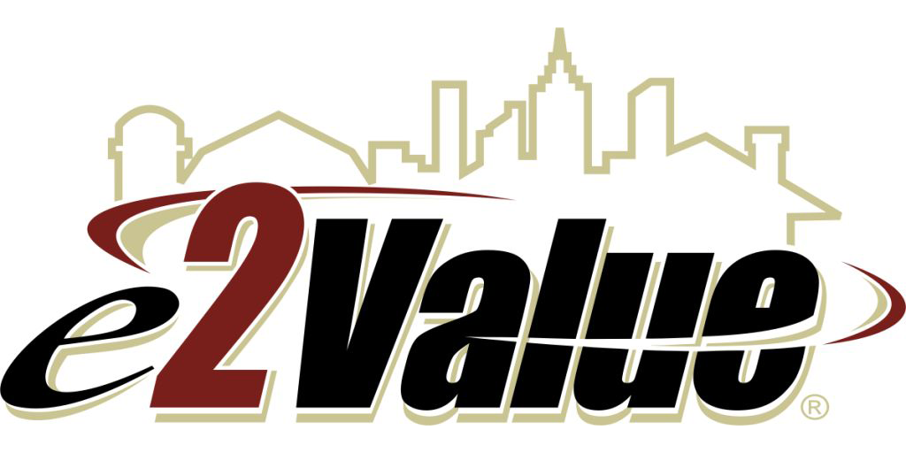
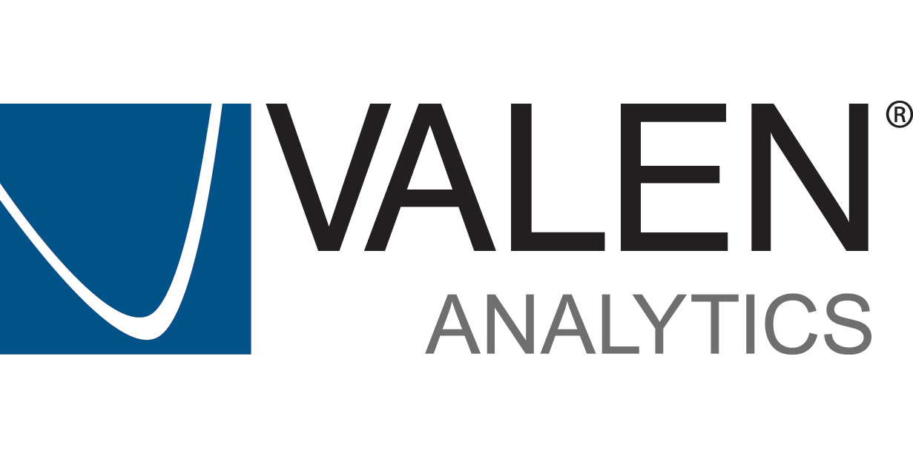

Agenda
Our agenda will be continually updated so please check back often.
Sunday 29th September 2013 |
||
|---|---|---|
| 12pm - 6pm |
Registration/Check-in Main Inn Lobby |
|
| 6pm - 9pm |
Welcome Reception STARS Main Dining Room |
|
Monday 30th September 2013 |
||
| Monday: 7:30 - 8:30 am |
SponsoredBreakfast STARS Main Dining Room |
SponsoredSteve Hauck, Eric Harnden and Curt Stevenson Opening Session Monomoy |
| 6pm - 9pm |
Welcome Reception STARS Main Dining Room |
|